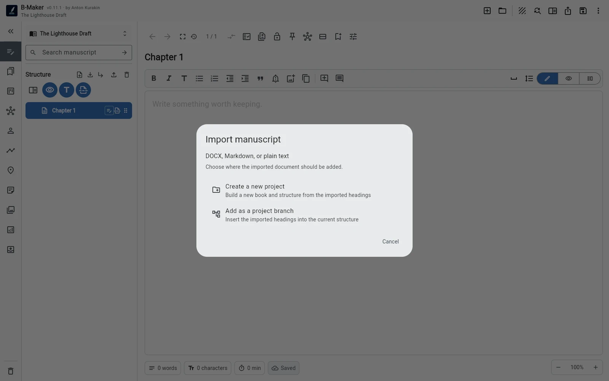
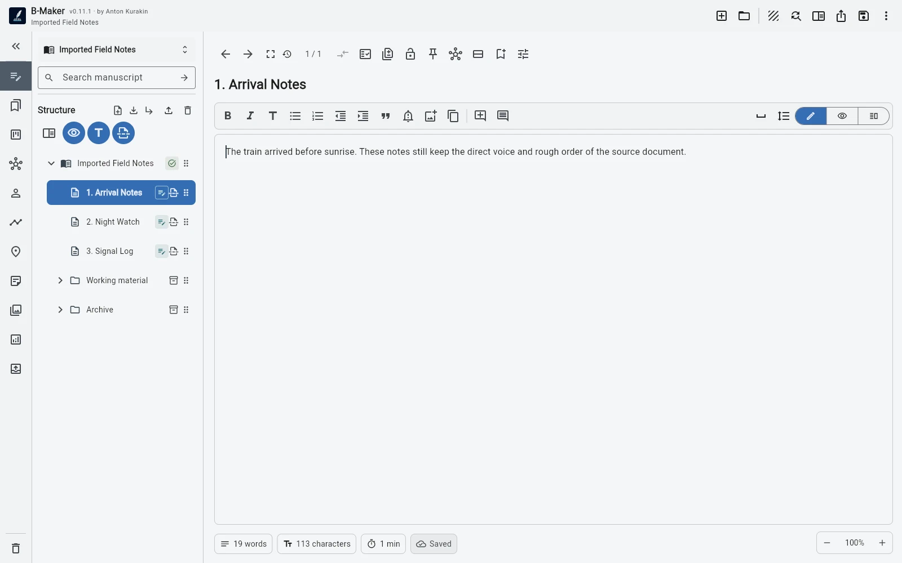

Bring TXT, Markdown or DOCX into a new project or into a branch of an existing project. Then reorganize only what actually benefits from B-Maker's structure.
Most writers do not begin with a clean migration
By the time you look for a different writing tool, you often already have material. A large DOCX file. Several Markdown files. Old notes exported as TXT. Maybe the book exists partly as chapters and partly as a folder called “misc”.
The wrong migration experience asks you to recreate everything before the new tool becomes useful. That is exactly when most people return to the old system.
Import should be an entrance, not a ceremony
B-Maker can bring TXT, Markdown and DOCX content into a new project. It can also import material into a branch of an existing project, which is useful when the incoming text is only one part of a larger body of work.
The important point is that import is not the end state. It is the first moment when old material becomes available inside the same project as the newer workflow.

Do not reorganize everything on day one
After import, the temptation is to “clean the project properly”: create every chapter, classify every note, build all collections, fill all metadata, and design the perfect Idea Map.
Usually that is just another form of postponing the writing. Start by making the imported text usable. If it already has a sensible structure, keep it. If one section is clearly too large, split that section. If a pile of material belongs together, move that pile. Stop when the next useful writing task becomes obvious.
Let the structure emerge from the old material
An existing manuscript contains information about its own structure. Repeated headings reveal sections. Separate articles reveal thematic clusters. Notes around the same idea may become a chapter later. Published pieces may belong in an archive while their themes feed the new book.
B-Maker's tree, collections, Idea Map and saved searches become useful gradually. Import first. Inspect second. Organize third.

An old archive can become part of the new book
Import is especially useful when the starting material is not yet a book. A group of essays, technical articles or research notes can enter the project first, remain readable in their original context, and later become raw material for a larger structure.
This connects directly to the “articles first, book later” workflow: migration does not need to destroy the history of the material in order to create something new from it.
Migration should reduce risk
The best migration is not the one with the most elaborate wizard. It is the one that lets you verify that your text is present, continue working, and postpone nonessential decisions.
You do not need to adopt every B-Maker feature to justify moving a manuscript. The first benefit can be much smaller: your old text is now inside a project that can grow with the next stage of the work.
Related stories
Start writing first · From articles to a book · One manuscript, several views
Bring the work you already did.
Import the manuscript, make the smallest useful structural change, and continue from there.